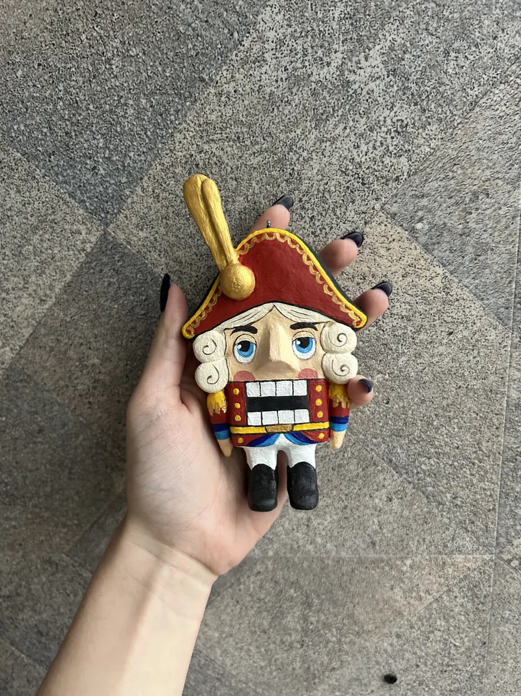
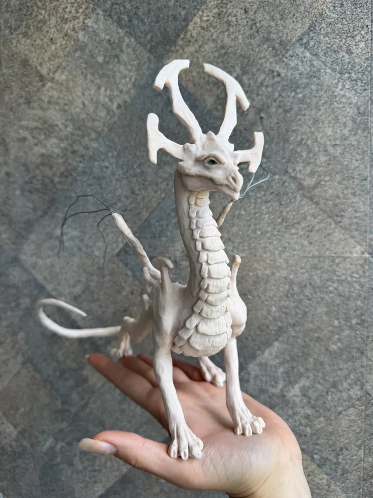
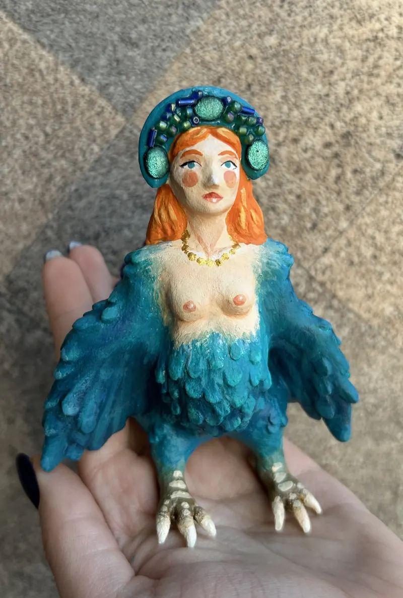
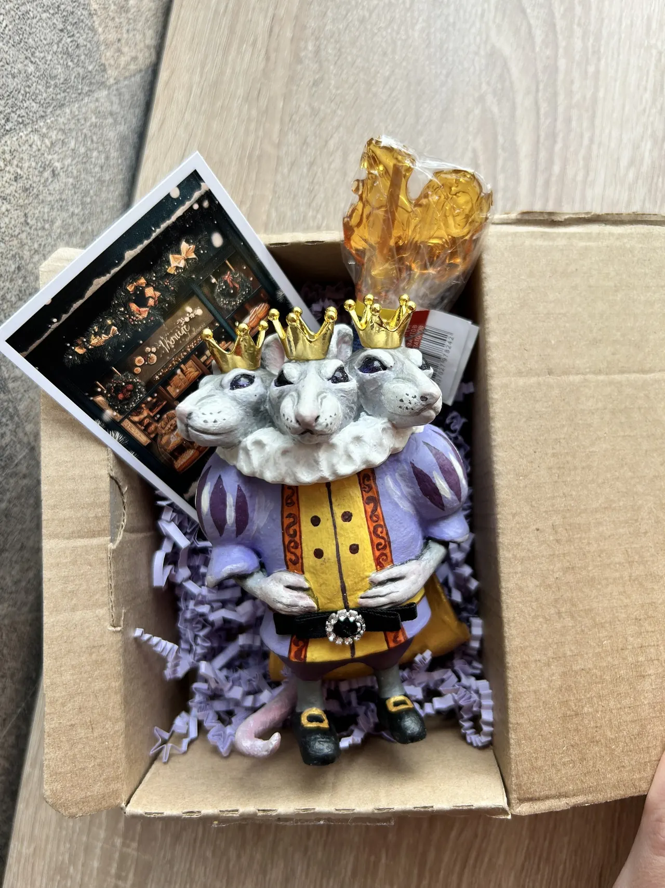
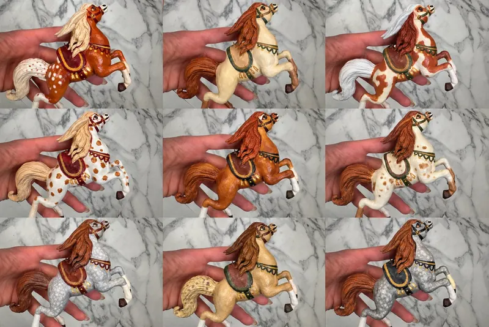

Авторская мастерская · Ручная работа
Мастерская Веры
Здесь рождаются коллекционные Жители — фантазийные существа с собственным характером, легендой и будущим Хранителем.
Каталог легенд
Коллекции Мастерской

Зимние легенды
Морозные узоры, старые сказки и ожидание праздничного чуда.
Тайны леса
Существа и диковины, скрытые под кронами древнего леса.

Древние существа
Драконы и мифические создания из забытых преданий.

Русские сказки
Знакомые с детства образы в авторском прочтении Мастера.

Рождение Жителей
От первого замысла до последнего штриха
Это приглашение к тихому ритуалу рождения: вы задаёте направление, а Мастерская помогает существу обрести свой голос. Двух совершенно одинаковых Жителей не бывает.
- 01Выбрать основу будущего ЖителяНайдите силуэт, с которого начнётся ваша история.
- 02Определить облик, глаза и украшенияСоберите выразительные детали будущего характера.
- 03Получить имя, характер и историюРитуал завершится появлением уникального Жителя.
Хроники Мастерской
У каждого Жителя есть предыстория
В архиве собраны заметки о поиске образов, первых опытах и необычных событиях, из которых постепенно выросла Мастерская.
Читать хроники
Азимондиас — начало пути
История первого синего дракона и первого Жителя Мастерской.
Для будущего Хранителя
Возможно, ваш Житель уже ждёт встречи
Выберите готовую работу или расскажите Мастерской об образе, который хотите воплотить.
Стать Хранителем